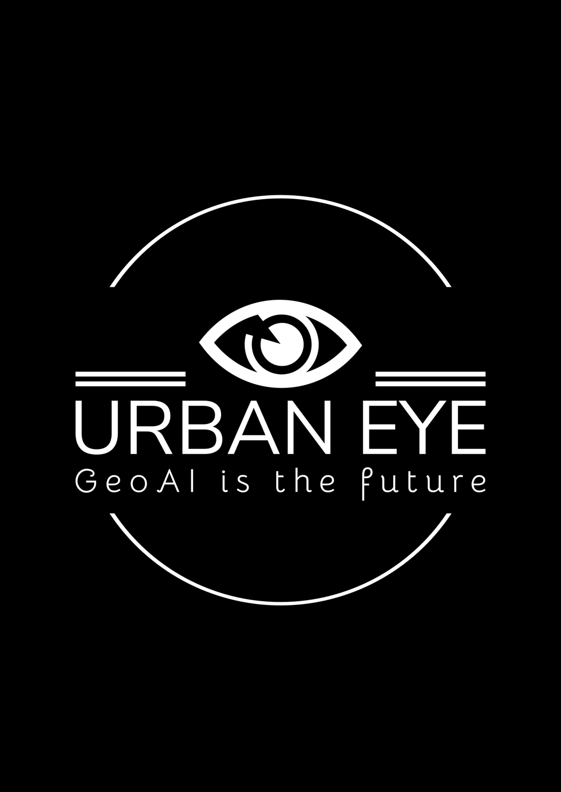
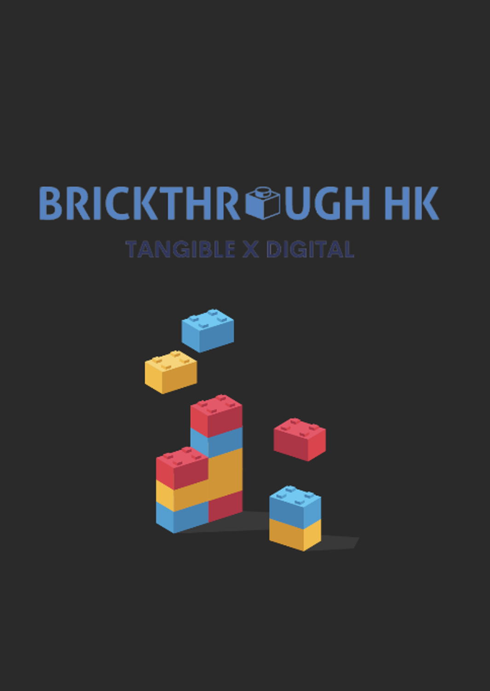

想展示歌唱才華，但又不想造成滋擾？香港擁有許多歌唱人才，但受限環境難以自由街頭表演。 這GIS工具輕鬆找出允許表演、受規管且人流充足的完美地點！還可透過網上預約系統預留位置，自由歌唱，為城市增添活力！

隨著城市發展，許多舊區將進行重建。你心目中的理想社區是怎樣的呢？
Urban Eye 利用人工智能和大數據建立評分卡，深入分析社區結構，推動更以人為本的重建！

城市發展常令人感到抽象——很難想像新建築對社區的影響？
BrickThroughHK 利用3D技術和地理數據分析，將規劃影響可視化，令結果更具體，並促進持份者對話！